ラボ E6c - Entra ID 認証とシングル サインオンの追加
このラボでは、Microsoft Entra ID の SSO 認証を追加し、 ユーザー が既存の Entra ID 資格情報で認証できるようにします。
Microsoft 365 が AI モデルとオーケストレーションを提供する宣言型 エージェントを構築したい場合は、これらの ラボ を実施してください。
- 🏁 ようこそ
- 🔧 セットアップ
- 🧰 宣言型 エージェントの基礎
- 🛠️ API をゼロから構築して統合する
- 🔐 認証
- 🔌 統合
Note
完成サンプルでは persistent developer tunnel を使用しています。そのため、persistent developer tunnel を使用しない場合は調整が必要です。Exercise 1 を確認してください。
このラボでは API を登録する際に、後で使用するために Entra ID ポータルと Teams Developer Portal からいくつかの値を保存する必要があります。保存する項目は次のとおりです。
API Base URL:
API's Entra ID application ID:
API's Tenant ID:
SSO Client registration:
API ID URI:
Exercise 1: Persistent developer tunnel のセットアップ (任意)
既定では、Agents Toolkit はプロジェクトを起動するたびに新しい developer tunnel を作成し、ローカルで実行中の API にアクセスするための新しい URL も生成します。通常は Agents Toolkit が自動で URL を更新するため問題ありませんが、このラボでは手動設定を行うため、デバッガーを開始するたびに Entra ID と Teams Developer Portal の URL を手動で更新する必要があります。そのため、URL が変わらない persistent developer tunnel を設定しておくと便利です。
persistent tunnel を設定しない場合はこちら ▶▶▶
このエクササイズをスキップして、Agents Toolkit が提供する developer tunnel を使用しても構いません。プロジェクトを実行したら、ターミナルのタブ 1️⃣ で "Start local tunnel" ターミナル 2️⃣ を選択し、Forwarding URL 3️⃣ をコピーできます。ただしこの URL はプロジェクトを開始するたびに変更されるため、アプリ登録の reply URL (Exercise 2 Step 1) と Teams Developer Portal の URL (Exercise 5 Step 1) を手動で更新する必要があります。

Step 1: Developer tunnel CLI のインストール
developer tunnel をインストールするためのコマンドは次のとおりです。Developer Tunnel の完全な手順とダウンロード リンクはこちら。
| OS | コマンド |
|---|---|
| Windows | winget install Microsoft.devtunnel |
| Mac OS | brew install --cask devtunnel |
| Linux | curl -sL https://aka.ms/DevTunnelCliInstall | bash |
Tip
devtunnel コマンドを使用する前に、パスを更新するためターミナルを再起動する必要がある場合があります。
インストール後、Microsoft 365 アカウントでログインします。
devtunnel user login
ラボを進める間、devtunnel コマンドは実行したままにしてください。再起動が必要な場合は、前述のコマンド devtunnel user login を再度実行します。
Step 2: トンネルの作成とホスト
次に、Azure Functions のローカル ポート (7071) へ persistent tunnel を設定します。必要に応じて "mytunnel" 部分を任意の名前に置き換えてください。
devtunnel create mytunnel -a --host-header unchanged
devtunnel port create mytunnel -p 7071
devtunnel host mytunnel
コマンドラインに接続情報が表示されます。

「Connect via browser」の URL をコピーし、「API Base URL」として保存してください。
Step 3: プロジェクトで動的トンネルを無効化
ローカルでプロジェクトが実行中の場合は停止します。その後 .vscode\tasks.json を編集し、「Start Teams App Locally」タスクを探します。"Start local tunnel" の依存関係をコメントアウトし、代わりに "Start Azurite emulator" を追加します。変更後は次のようになります。
{
"label": "Start Teams App Locally",
"dependsOn": [
"Validate prerequisites",
//"Start local tunnel",
"Start Azurite emulator",
"Create resources",
"Build project",
"Start application"
],
"dependsOrder": "sequence"
},
Step 4: サーバー URL の手動上書き
env/.env.local を開き、OPENAPI_SERVER_URL の値を persistent tunnel の URL に変更します。これは後続手順で必要となる API base URL です。
Exercise 2: API 用 Entra ID アプリ登録
Step 1: 新しい Entra ID アプリ登録の追加
Microsoft 365 管理センター 経由、または直接 https://entra.microsoft.com/ から Entra ID 管理センターを開き、開発テナントであることを確認します。
「Identity」1️⃣ → 「Applications」2️⃣ → 「App registrations」3️⃣ をクリックし、"+" 4️⃣ で新しいアプリ登録を作成します。

アプリケーション名には「Trey API Service」など分かりやすい名前を入力し 1️⃣、「Supported account types」では「Accounts in this organizational directory only (Microsoft only - single tenant)」2️⃣ を選択します。
「Register」3️⃣ をクリックして登録します。
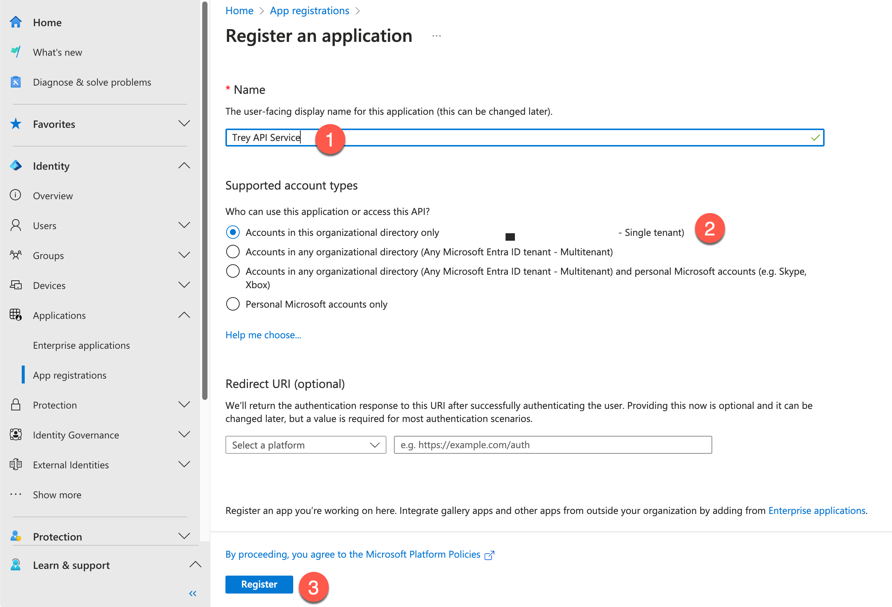
Step 2: アプリケーション情報のコピー
API's Entra ID application ID にあたる Application ID (Client ID) 1️⃣ と、API's Tenant ID にあたる Directory (tenant) ID 2️⃣ をコピーして安全な場所に保存してください。
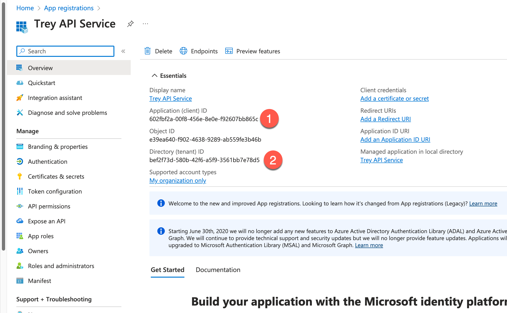
Exercise 3: Teams Developer Portal で Microsoft Entra SSO クライアントを登録
API で Microsoft Entra ID の設定は完了しましたが、Microsoft 365 側ではまだ認識されていません。追加の資格情報を要求せず安全に API を接続できるよう、Teams Developer Portal で登録します。
Step 1: Teams Developer Portal で SSO クライアントの登録
https://dev.teams.microsoft.com を開き、「Tools」1️⃣ → 「Microsoft Entra SSO client ID registration」2️⃣ を選択します。
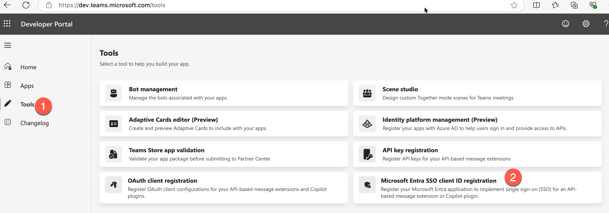
「Register client ID」を選択し、次の値を入力します。
| 項目 | 値 |
|---|---|
| Name | 覚えやすい名前 |
| Base URL | API base URL |
| Restrict usage by org | 「My organization only」 |
| Restrict usage by app | 「Any Teams app」 |
| Client (application) ID | API's Entra ID application ID |
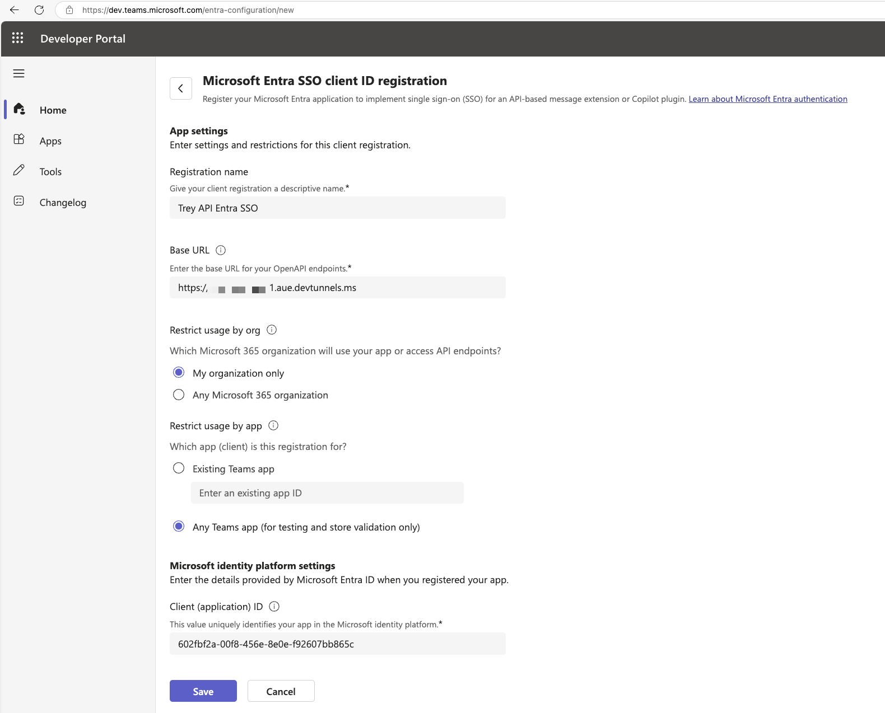
「Save」を選択すると、Microsoft Entra SSO registration ID と Application ID URI が生成されます。これらをメモしておき、プラグイン manifest ファイルの設定に使用します。
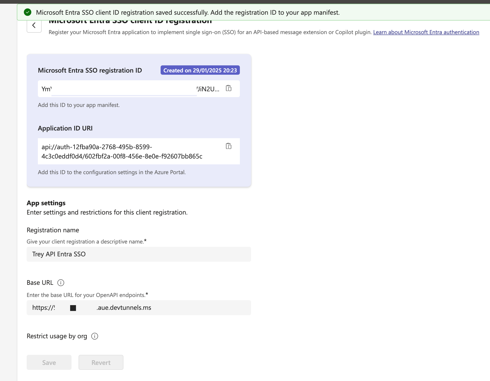
persistent developer tunnel URL を使用していない場合…
…Agents Toolkit でアプリケーションを起動するたびに、新しいトンネル URL を「Base URL」フィールドへ手動で更新する必要があります。
Exercise 4: アプリケーション パッケージの更新
Step 1: プラグイン ファイルの更新
Visual Studio Code で作業フォルダーを開きます。appPackage フォルダーの trey-plugin.json を開きます。ここには Open API Specification (OAS) には含まれない Copilot 用情報が格納されています。
Runtimes の下に auth プロパティがあり、"type" が "None" になっています。これを次のように変更し、Copilot に Microsoft Entra SSO registration ID を使用して認証するよう指示します。
"auth": {
"type": "OAuthPluginVault",
"reference_id": "<Microsoft Entra SSO registration ID>"
},
Exercise 5: API の Entra ID アプリ登録の更新
Step 1: Application ID URI の更新
- Microsoft Entra admin center に戻り、API の Entra ID アプリ登録 (Trey API Service など) を開きます。
- Expose an API を開き、Application ID URI を追加/編集します。Teams Developer Portal で生成された Application ID URI を貼り付け、「Save」を選択します。
Step 2: API Scope の追加
API への呼び出しを検証するため、API Scope を公開する必要があります。ここではシンプルな scope 名 "access_as_user" を設定します。
「Add a scope」で scope 名に "access_as_user" を入力 1️⃣ し、残りのフィールドを次のように設定します。
| 項目 | 値 |
|---|---|
| Who can consent? | Admins and users |
| Admin consent display name | Access My API as the user |
| Admin consent description | Allows an API to access My API as a user |
| User consent display name | Access My API as you |
| User consent description | Allows an app to access My API as you |
| State | Enabled |
完了したら「Add Scope」2️⃣ をクリックします。
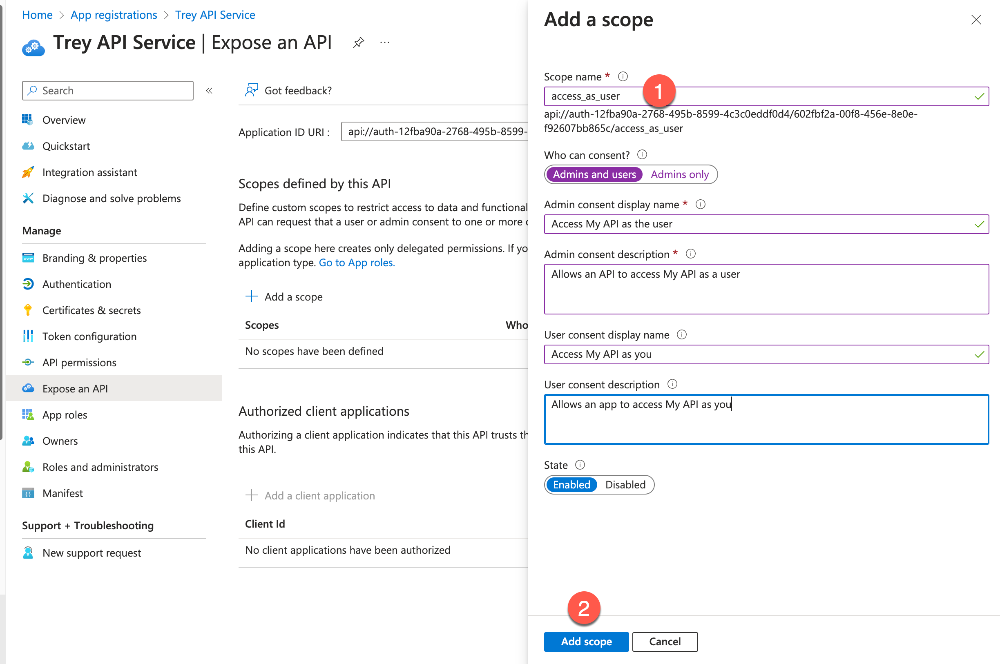
Step 3: Authorized client apps の追加
同じ Expose an API ページで Add a client application 1️⃣ を選択し、Microsoft の enterprise token store のクライアント ID ab3be6b7-f5df-413d-ac2d-abf1e3fd9c0b を入力 2️⃣。access scope にチェックを入れ 3️⃣、「Add application」を選択 4️⃣ します。
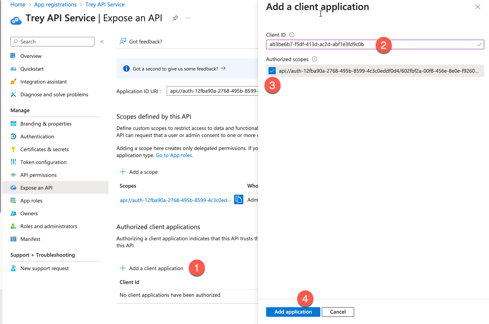
Step 4: 認証用 Redirect URI の追加
左ナビゲーションで Authentication 1️⃣ → Add a platform 2️⃣ → Web 3️⃣ を選択します。
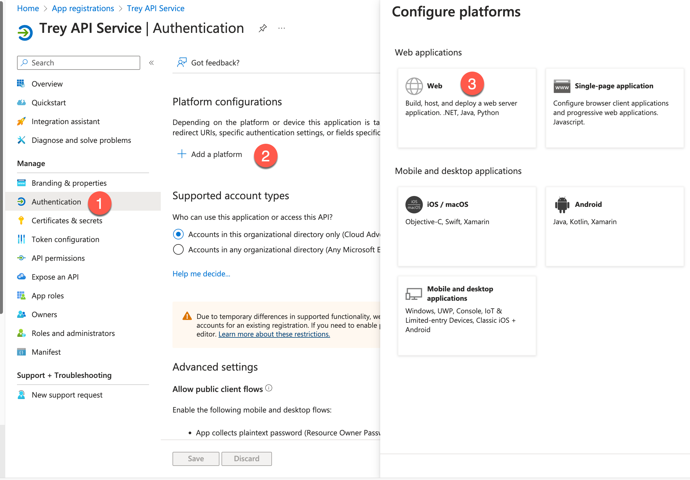
Redirect URIs に https://teams.microsoft.com/api/platform/v1.0/oAuthConsentRedirect を貼り付け 1️⃣、「Configure」2️⃣ を選択します。
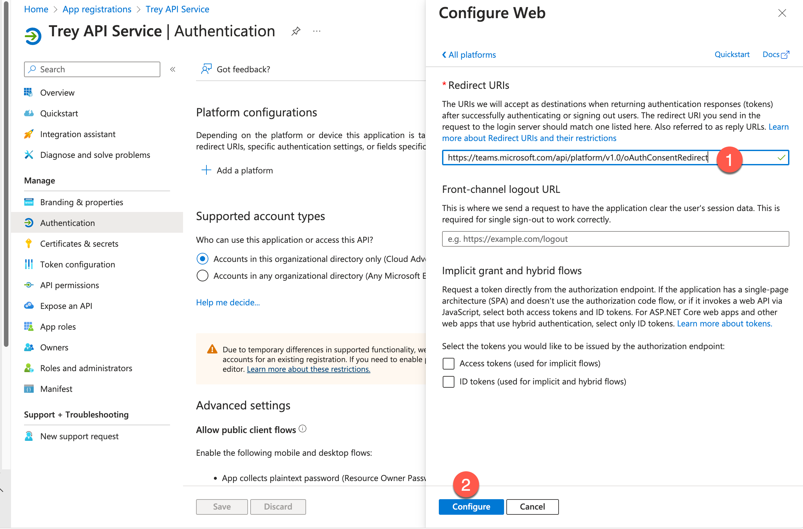
Exercise 6: アプリケーション コードの更新
Step 1: JWT 検証ライブラリのインストール
作業ディレクトリで次のコマンドを実行します。
npm i jwt-validate
これで Entra ID 認可トークンを検証するライブラリがインストールされます。
Warning
Microsoft は NodeJS 用の Entra ID トークン検証ライブラリを公式には提供していません。代わりに 詳細なドキュメント が公開されています。また Microsoft MVP Andrew Connell による 参考記事 もあります。このラボでは コミュニティ提供ライブラリ (作者: Waldek Mastykarz) を使用します。MIT ライセンスであり、Microsoft のサポート対象外ですので自己責任でご利用ください。
Step 2: API 用環境変数の追加
作業ディレクトリの env フォルダーにある .env.local を開き、テナント ID と Application ID URI を追加します。
APP_ID_URI=<Application ID URI>
API_TENANT_ID=<Directory (tenant) ID>
Application ID URI を手動で生成する場合
Application ID URI が取得できない場合は、以下の手順で一時的に生成してください:
1. Base64 Decode and Encode を開きます。
2. Exercise 3 Step 1 で生成した auth registration ID を貼り付けて decode します。
3. デコード結果の 2 つ目の部分 (## 以降) を使用し api://auth-<AuthConfigID_Decoded_SecondPart> の形式で組み立てます。例: api://auth-16cfcd90-803e-40ba-8106-356aa4927bb9
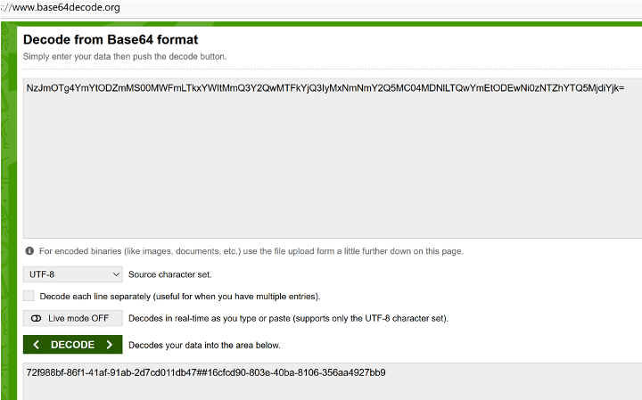
Agents Toolkit で実行されるコード内でもこれらの値を利用できるよう、作業フォルダー直下の teamsapp.local.yml を更新します。"Generate runtime environment variables" のコメントを探し、STORAGE_ACCOUNT_CONNECTION_STRING の下に次を追加します。
APP_ID_URI: ${{APP_ID_URI}}
API_TENANT_ID: ${{API_TENANT_ID}}
完成形は次のようになります。
- uses: file/createOrUpdateEnvironmentFile
with:
target: ./.localConfigs
envs:
STORAGE_ACCOUNT_CONNECTION_STRING: ${{SECRET_STORAGE_ACCOUNT_CONNECTION_STRING}},
APP_ID_URI: ${{APP_ID_URI}}
API_TENANT_ID: ${{API_TENANT_ID}}
Step 3: Identity service の更新
現時点で SSO は機能し、有効なアクセス トークンが取得できますが、コード側でトークンの妥当性を確認しなければ安全ではありません。この手順ではトークンを検証し、 ユーザー の名前や ID などを抽出するコードを追加します。
src/services フォルダーの IdentityService.ts を開きます。
ファイル冒頭の import 群に次を追加します。
import { TokenValidator, ValidateTokenOptions, getEntraJwksUri } from 'jwt-validate';
続いて、class Identity 宣言の直下に次の行を追加します。
private validator: TokenValidator;
次に、以下のコメント行を探します。
// ** INSERT REQUEST VALIDATION HERE (see Lab E6) **
このコメントを次のコードに置き換えます。
// Try to validate the token and get user's basic information
try {
const { APP_ID_URI, API_TENANT_ID } = process.env;
const token = req.headers.get("Authorization")?.split(" ")[1];
if (!token) {
throw new HttpError(401, "Authorization token not found");
}
// create a new token validator for the Microsoft Entra common tenant
if (!this.validator) {
// We need a new validator object which we will continue to use on subsequent
// requests so it can cache the Entra ID signing keys
// For multitenant, use:
// const entraJwksUri = await getEntraJwksUri();
const entraJwksUri = await getEntraJwksUri(API_TENANT_ID);
this.validator = new TokenValidator({
jwksUri: entraJwksUri
});
console.log ("Token validator created");
}
const options: ValidateTokenOptions = {
audience: APP_ID_URI,
issuer: `https://sts.windows.net/${API_TENANT_ID}/`,
scp: ["access_as_user"],
};
// validate the token
const validToken = await this.validator.validateToken(token, options);
userId = validToken.oid;
userName = validToken.name;
userEmail = validToken.upn;
console.log(`Request ${this.requestNumber++}: Token is valid for user ${userName} (${userId})`);
}
catch (ex) {
// Token is missing or invalid - return a 401 error
console.error(ex);
throw new HttpError(401, "Unauthorized");
}
コードを読み解く
Authorizationヘッダーから "Bearer " 以降のトークン部分を取得しています。- トークン検証に失敗した場合は例外をスローし、Azure Function が 401 エラーを返します。
jwt-validateライブラリ用の TokenValidator を生成し、Entra ID の署名キーをキャッシュします。ValidateTokenOptionsで audience が API Service App の URI と一致すること、issuer がテナントの STS であること、scope が"access_as_user"であることを検証します。- トークンが有効な場合、 ユーザー の ID・名前・メール アドレスなどのクレームを取得できます。
マルチテナント アプリの場合
マルチテナント アプリでのトークン検証については、コード中のコメントを参照してください。
userId が取得できると、対応する Consultant レコードを検索します。見つからない場合は新規作成されます。初回実行時にはログイン ユーザー 用の Consultant が作成され、デフォルトのスキルやロールが設定されます。デモ用に変更したい場合は Azure Storage Explorer を使用して編集できます。

プロジェクト割り当ては Assignment テーブルに保存され、project ID と consultant ID を参照しています。
Step 4: ライブラリ バージョン問題の回避策
現時点では jwt-validate パッケージが @types/jsonwebtoken に関する型エラーを出す場合があります。回避策として、プロジェクト ルートの tsconfig.json を編集し、"skipLibCheck": true を追加してください。将来のライブラリ バージョンでは不要になる可能性があります。
Exercise 7: アプリケーションのテスト
アプリをテストする前に、appPackage\manifest.json の manifest version を更新します。
appPackageフォルダー内のmanifest.jsonを開きます。versionフィールドを探します。例:
"version": "1.0.0"
- バージョン番号を小さくインクリメントします。例:
"version": "1.0.1"
- 保存します。
Step 1: アプリケーションの再起動
アプリケーションを再起動し、Copilot アプリで Trey Genie を開きます。
プロンプト: 「私が割り当てられているプロジェクトは？」
エージェントを許可すると、次のようにサインインを求められます (初回のみ)。
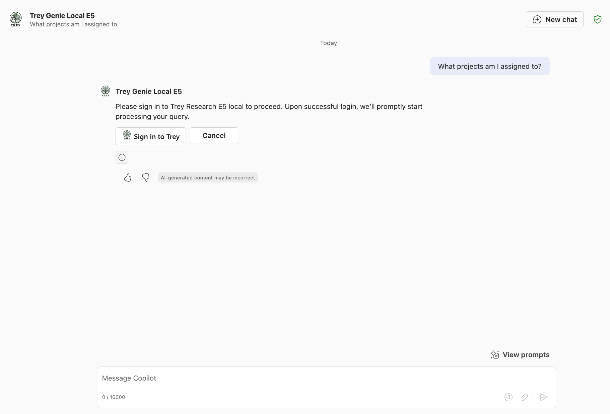
サインイン ボタンを選択すると、アプリケーションの API が現在の ユーザー としてアクセスする許可を要求してくるので、「Accept」を選択してください。
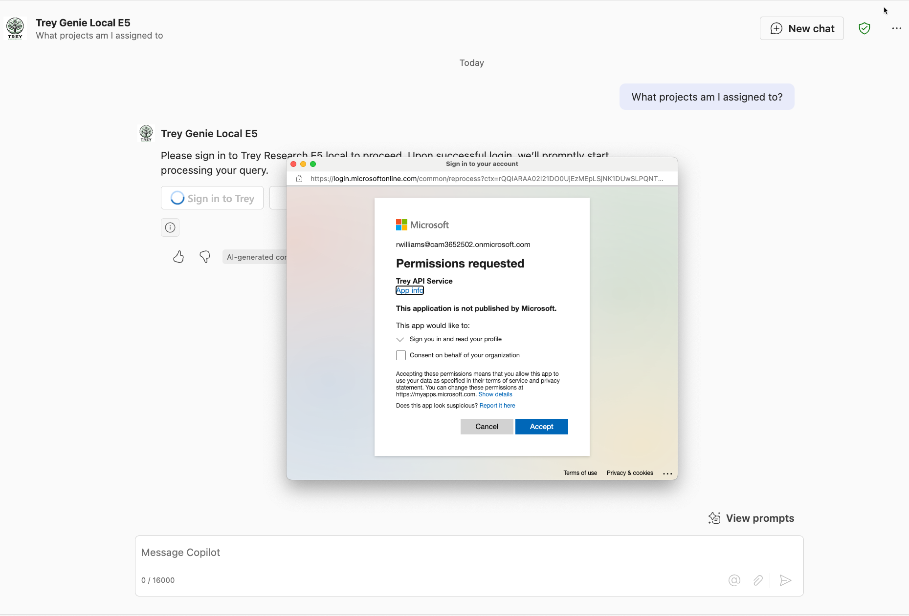
これ以降は、 ユーザー がエージェントとやり取りする際に毎回サインインする必要はなく、スムーズに SSO が行われます。
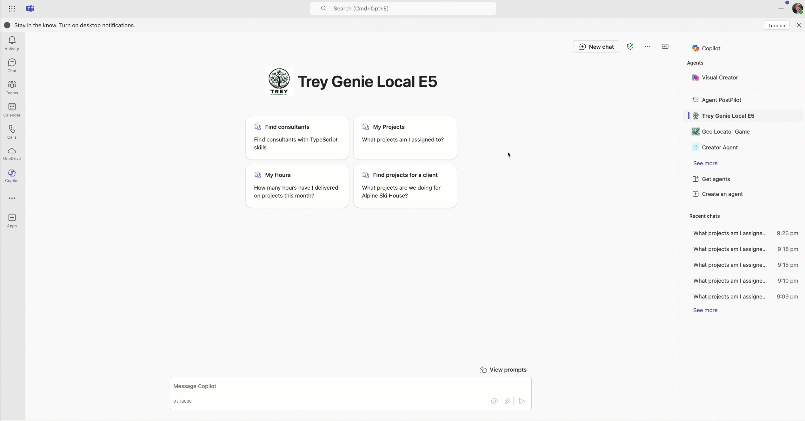
おめでとうございます！
ラボ E6c (SSO 追加) を完了しました。
何か面白いことを試してみませんか？ ソリューションに Copilot Connector を追加してみましょう。